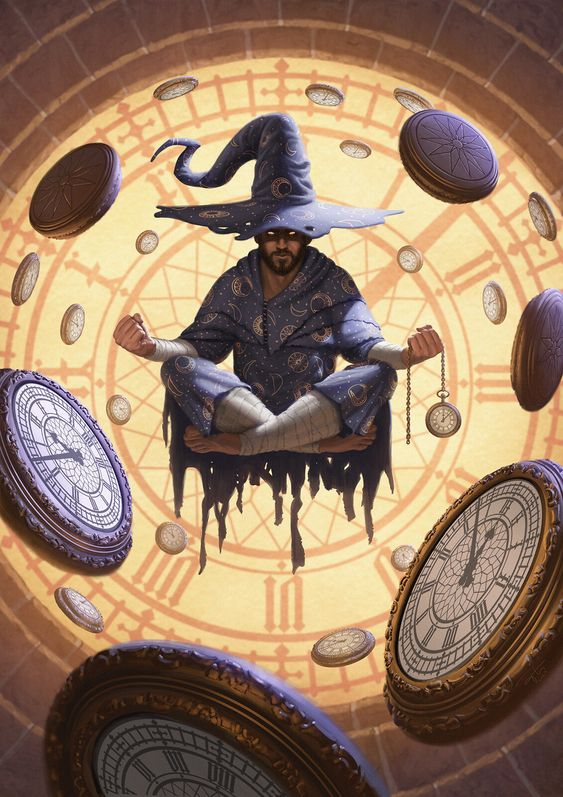

In this ending, your choices lead to a life of opulence and power, fueled by your manipulation of the timepiece. By exploiting your knowledge of the future or the magical abilities it grants you, you amass great wealth, gain influence over historical figures, and shape the world to your liking. However, the pursuit of personal gain comes at a cost.
Despite your wealth and influence, you find yourself isolated from the world and trapped by the very power you've harnessed. The ethical consequences of your actions weigh heavily on your conscience, and you're left in a world of your own making, where your power and privilege have come at the expense of the well-being and freedom of others. Your life is one of grandeur and solitude, forever bound by the choices you've made.